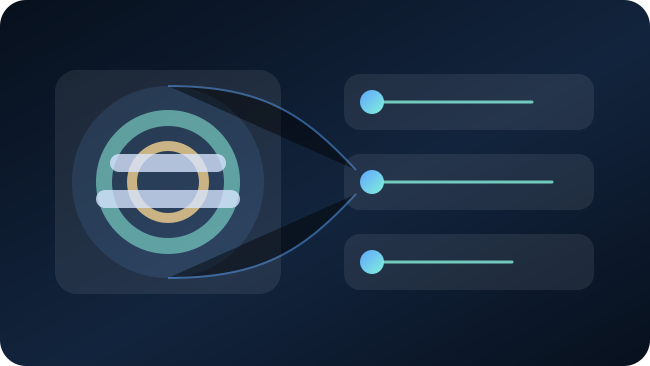

We know the problem, but not the right path
Compare workflow improvement, automation, AI, deployment, cloud, and modernization options before implementation.
Start with Solution Assessment ->Select a focused service or combine them into a transformation programme. Each engagement connects the business workflow, measurable outcome, AI solution, secure cloud architecture, governance controls, and operating model.
Start with the problem and the next decision. DigiScience can then recommend the appropriate service or combination.
Compare workflow improvement, automation, AI, deployment, cloud, and modernization options before implementation.
Start with Solution Assessment ->Evaluate business value, data feasibility, governance risk, cloud readiness, and pilot candidates.
Explore strategy and readiness ->Define a bounded pilot with measurable success criteria, human review, security controls, and a stop-or-scale decision.
Explore the 45-day pilot ->Design cloud, identity, data, governance, delivery, observability, and operating controls for production AI.
Explore the secure AI platform ->Every service remains available as a standalone engagement while fitting into one path from opportunity prioritization to secure, governed production.

Prioritize AI opportunities and create an executable roadmap grounded in business value, data feasibility, cloud readiness, governance risk, and investment priorities.
View strategy and readiness →
Convert industry pain points into AI use cases that improve productivity, revenue intelligence, compliance readiness, customer experience, and operational efficiency.
View industry transformation →
Prove one high-value use case with defined scope, architecture, success metrics, governance controls, working pilot, and scale roadmap.
View pilot framework →
Build secure AI landing zones with private networking, IAM/RBAC, observability, audit logging, data classification, and cost governance.
View platform solution →
Implement prompt security, model governance, human approval, hallucination risk controls, audit trail, agent control, and compliance mapping.
View governance solution →
Create secure delivery patterns for MLOps, LLMOps, DevSecOps, CI/CD, Kubernetes, release approvals, and production observability.
View AI-ready DevOps →
Modernize only what is required to make cloud, data, security, and delivery foundations ready for governed enterprise AI adoption.
View AI-ready modernization →We recommend beginning with an AI Readiness Assessment, then moving into a focused 45-day pilot only after the use case, data, platform, risk, and success criteria are clear.
Start AI Readiness Assessment